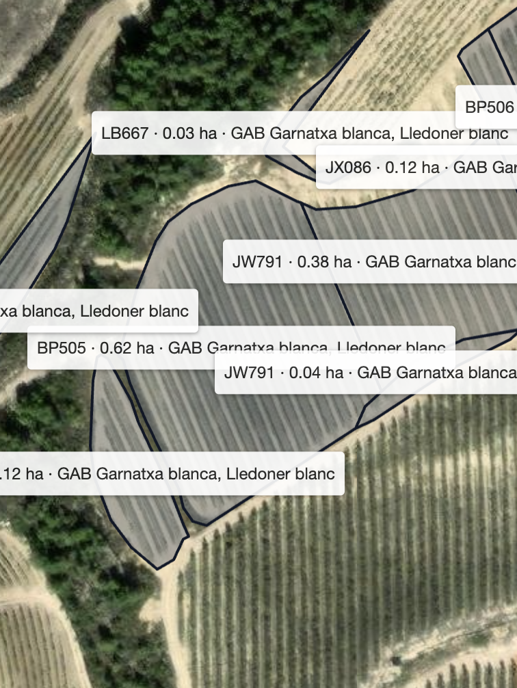
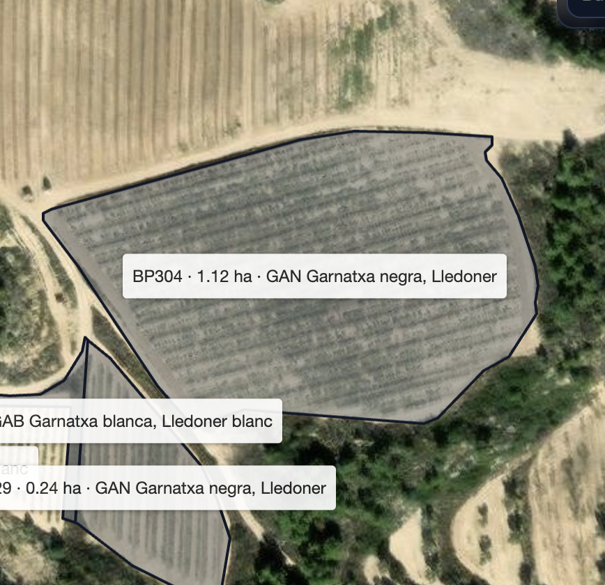
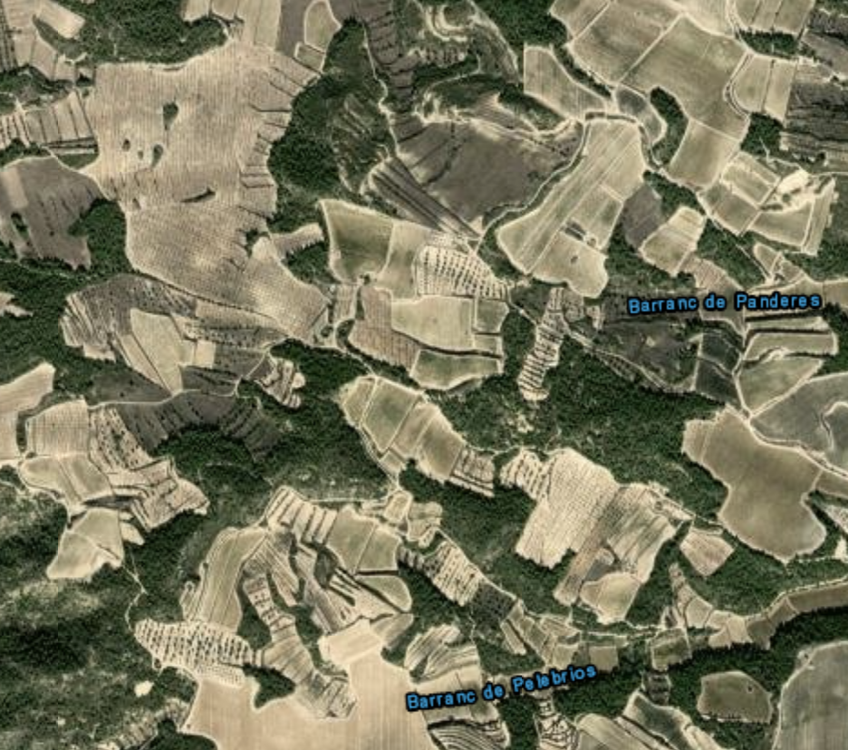

2026-01-08
Informe de Riesgo de Incendio
Arcadia Atlas – Zona de estudio
Riesgo elevado de incendio debido a alta carga de vegetación y condiciones secas previstas.
Arcadia Atlas – Zona de estudio
Riesgo elevado de incendio debido a alta carga de vegetación y condiciones secas previstas.

El nivel de riesgo asignado se ha obtenido mediante el modelo fire-risk-v1, integrando indicadores de biomasa (NDVI), humedad del combustible (NDWI), pendiente del terreno y condiciones de accesibilidad operativa.
Las siguientes medidas se proponen para la reducción del riesgo de incendio conforme a los factores identificados por el modelo.

El nivel de riesgo asignado se ha obtenido mediante el modelo fire-risk-v1, integrando indicadores de biomasa (NDVI), humedad del combustible (NDWI), pendiente del terreno y condiciones de accesibilidad operativa.
Las siguientes medidas se proponen para la reducción del riesgo de incendio conforme a los factores identificados por el modelo.
| Parcela | NDVI medio | NDWI medio | Pendiente (%) | Score | Clase |
|---|---|---|---|---|---|
| 1 — Parcela Norte | 0.71 | 0.18 | 32 | 78 | R3 |
| 2 — Parcela Sur | 0.55 | 0.22 | 18 | 52 | R2 |
Valores calculados a partir de los datos disponibles en la fecha de generación del informe, según el modelo fire-risk-v1.

Mapa general de localización de las parcelas analizadas dentro del área de estudio, mostrando el contexto territorial inmediato.
Modelo: fire-risk-v1
Modelo heurístico basado en variables de vegetación, topografía y accesibilidad.
Los resultados dependen de la calidad, resolución y fecha de los datos utilizados.